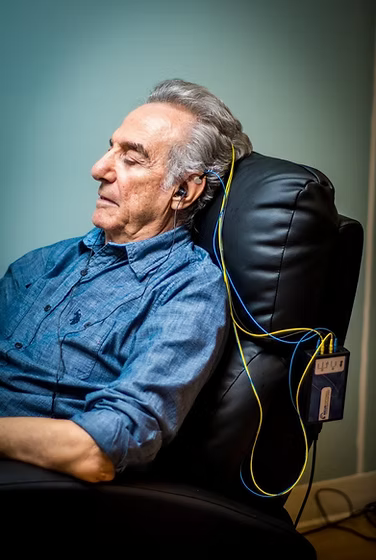

Retour en temps réel
Le cerveau reçoit une information immédiate sur ce qu'il est en train de faire, sans effort conscient à produire.
Neurofeedback dynamique NeurOptimal
Accompagnement non médical, non invasif, proposé sur rendez-vous à Bussy-Saint-Martin, en Seine-et-Marne.
Première séance d'environ 1 heure, puis séances de 50 minutes.
Le contenu du site ne remplace pas un avis médical ni un suivi adapté si besoin.
La méthode
Le neurofeedback dynamique est présenté ici comme une pratique d'entraînement cérébral, non médicale et non invasive. Les séances s'appuient sur un retour en temps réel pour aider le cerveau à mieux s'auto-réguler, dans un cadre simple, doux et sans effort particulier.
Vous vous installez confortablement, vous regardez un film ou écoutez de la musique, pendant que le système accompagne le cerveau en arrière-plan.
Pendant la séance, des capteurs sont posés sur le cuir chevelu pendant que la personne s'installe dans un fauteuil, regarde un film ou écoute de la musique. Le logiciel observe les variations d'activité et crée de brèves micro-interruptions sonores, comme un signal de retour adressé au système nerveux.
L'intention du lieu n'est pas de poser un diagnostic ou de remplacer un suivi médical, mais d'offrir un espace d'entraînement non invasif, centré sur l'auto-régulation, le repos, la flexibilité et la sensation de mieux fonctionner au quotidien.
Le cerveau reçoit une information immédiate sur ce qu'il est en train de faire, sans effort conscient à produire.
La séance se vit dans un fauteuil confortable, avec un film, de la musique et un rythme calme.
La pratique se veut douce, sans protocole imposé au cerveau et sans manipulation intrusive.
Chaque personne avance à son rythme. Les objectifs, ressentis et bénéfices peuvent varier d'un parcours à l'autre.
Un cadre rassurant pour travailler l'attention, le calme ou la qualité du sommeil.

Une parenthèse pour ralentir, respirer et retrouver plus de souplesse mentale dans le quotidien.
Pour traverser des périodes plus chargées avec davantage d'ancrage, de recul et de disponibilité.
Une séance en pratique
Pour qui
Pour les périodes où l'attention, le sommeil, la tension émotionnelle ou la charge scolaire prennent trop de place. La séance conserve une forme simple et rassurante.
La pratique peut intéresser les personnes qui se sentent saturées, fatiguées, en perte de concentration, en recherche d'apaisement, ou qui souhaitent soutenir une démarche de mieux-être plus globale.
Le neurofeedback est aussi présenté comme un soutien pour les moments de vie qui demandent davantage d'ancrage : préparation mentale, récupération, grossesse, vieillissement, ou simple envie de mieux se recentrer.
Pour toute situation importante ou déjà suivie médicalement, cette pratique se pense comme un accompagnement complémentaire et non comme un remplacement.
Séances & tarifs
| Repère | Information |
|---|---|
| Première consultation | Offerte, environ 1 heure |
| Séances suivantes | 50 minutes |
| Tarif | 50 EUR la séance |
| Cure souvent proposée | 10 séances rapprochées puis 1 à 2 séances par semaine, à ajuster ensuite |
| Rythme | Chaque cerveau avance à son propre rythme, le parcours reste personnalisé |
| Reglement | Especes |
| Conventionnement | Séances non conventionnées |
| Mutuelles | Participation possible selon contrat : Agrica, Crédit Mutuel, MGEN, Swiss Life, Pacifica... |
Non. Vous vous posez, vous regardez un film ou vous écoutez de la musique, et la séance suit son cours.
Le nombre varie d'une personne à l'autre. Une base de 10 séances est souvent conseillée pour engager une dynamique.
Non. Le cadre présenté ici est celui d'un accompagnement non médical et complémentaire.
Oui, l'idée est justement d'échanger d'abord pour voir si la démarche vous correspond.
Questions fréquentes
Pour aller plus loin
Votre accompagnatrice
Passionnée par le corps humain et son fonctionnement, Roxane s'est formée au neurofeedback dynamique avec l'envie de faire connaître cette pratique au plus grand nombre, dans une démarche d'écoute, de présence et de respect du rythme de chacun.
L'esprit du lieu est simple : offrir un espace dans lequel on peut déposer la surcharge, reprendre un peu de recul, retrouver ses priorités et s'autoriser à aller vers une version plus stable, plus apaisée et plus disponible de soi.
Investir dans sa santé mentale et dans son confort intérieur, c'est aussi prendre soin de sa santé physique, de son entourage et de son quotidien.